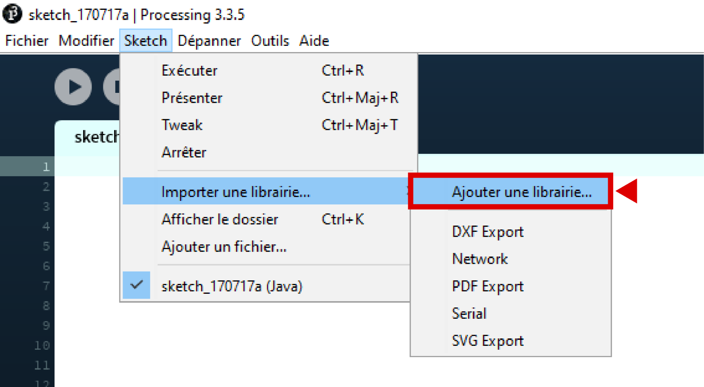
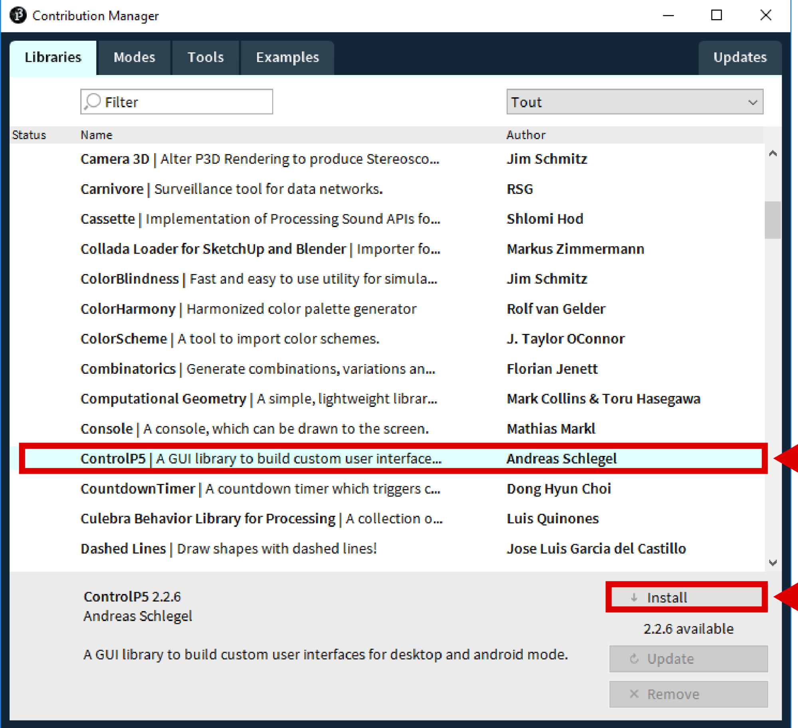
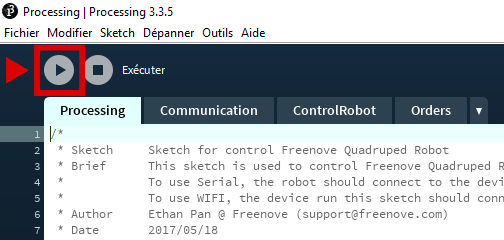
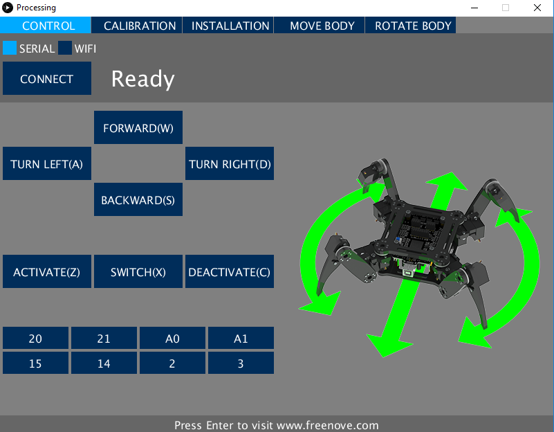

Processing is a free development environment based on the Java platform. This environment has been created for digital artists and graphic designers: it allows to generate and manipulate 2D and 3D images, and to create interactive applications. In our case we will use it to drive the robot with USB and wifi.
Programs created and used with Processing are called sketches or Sketches, they must all be stored in a folder called sketchbook. By default your Sketchbook is called Processing and is located in your Documents folder. If you can not find your folder you can find its location by going to File > Preferences.
As for the Arduino IDE we must first install the libraries needed to control the robot.
Launch Processing then click on Sketch > Import a library > Add a library
In the Contribution Manager window, choose ControlP5, then click Install. Copy to your Sketchbook the folder named Processing found in MakersAcademy_Quadruped_Robot_Kit-master > Processing > Sketches
Open the Processing file that is located in the folder you just copied File > Open > Processing
Then run the Sketch you just opened
The execution of the Sketch launches the interface of control of the robot, this one will allow you to calibrate it then to control its movements.
